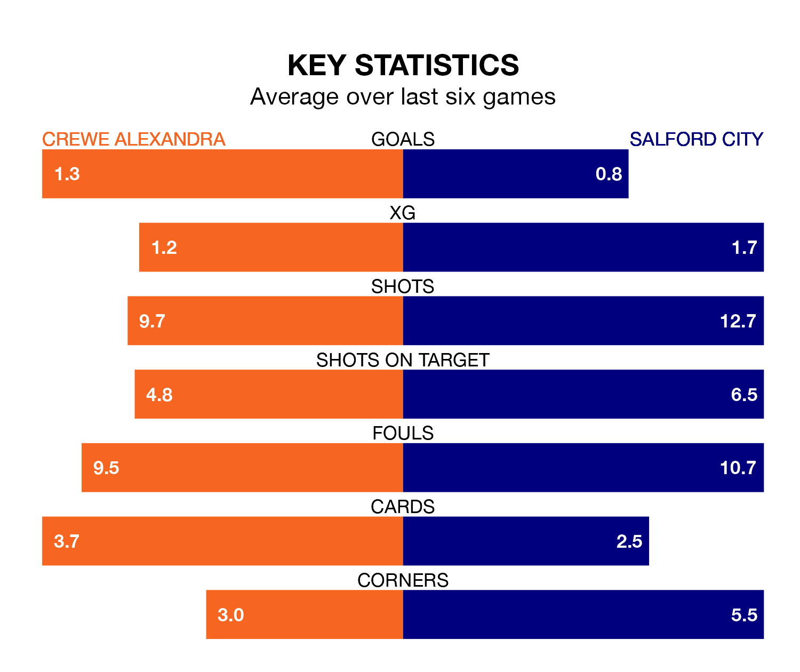

Crewe Alexandra host Salford City at the Mornflake Stadium on Saturday on the back of four consecutive wins in EFL League Two.
Crewe have picked up 13 points from their last six games, and they face an Ammies side who drew their last match, and have collected five points from the last possible 18.
With 53 goals in 28 games so far this season, Crewe are scoring more than average in the league with 1.9 goals per game. And they are conceding at an average rate, letting in 41 goals at a rate of 1.5 per game.
Salford, meanwhile, are below average scorers, with 1.3 goals per game, compared to a league average of 1.5. They have conceded 1.8 goals per game.
The Railwaymen are fourth in the table after 28 games, of which they have won 14 and drawn eight, earning 50 points.
City are 16 places behind the home team in 20th, with seven wins and seven draws putting them on 28 points.
In Matt Smith, the Ammies have one of the league's most on-form strikers so far this season. He has notched 15 goals in 28 appearances, to sit third in the scoring charts.
Crewe's top scorers, with nine goals each, are Elliot Nevitt, Chris Long and Courtney Baker-Richardson.
In the last five years, Crewe and Salford have played each other on five occasions. Crewe won two of them and Salford three.
On average, the Railwaymen scored 2.2 goals and the Ammies 2.8 in those matches.
Their last meeting was on October 7, when Salford won 4-2 at home.
Crewe's last match was on January 20, a 3-1 win against Barrow, with Lewis Billington, Matúš Holíček and Nevitt getting the goals for the Railwaymen.
Salford drew 1-1 with Bradford City last time out, on Tuesday, with Ryan Watson on the scoresheet.
Updated: 09:07 (UTC), 24/01/24